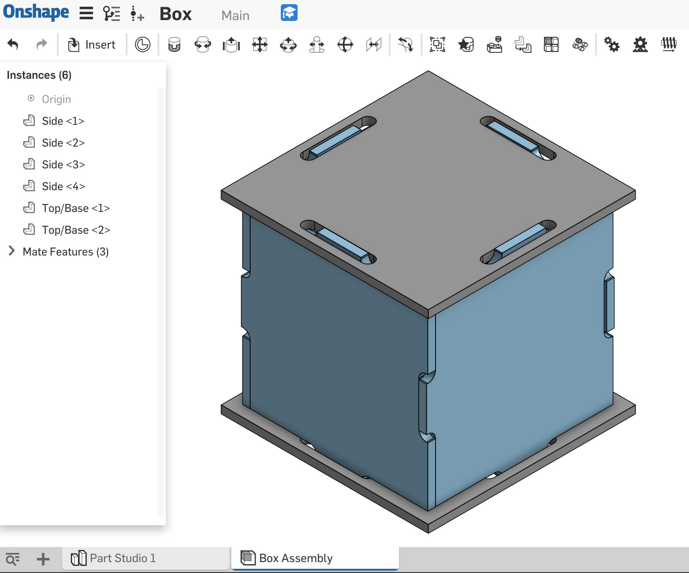
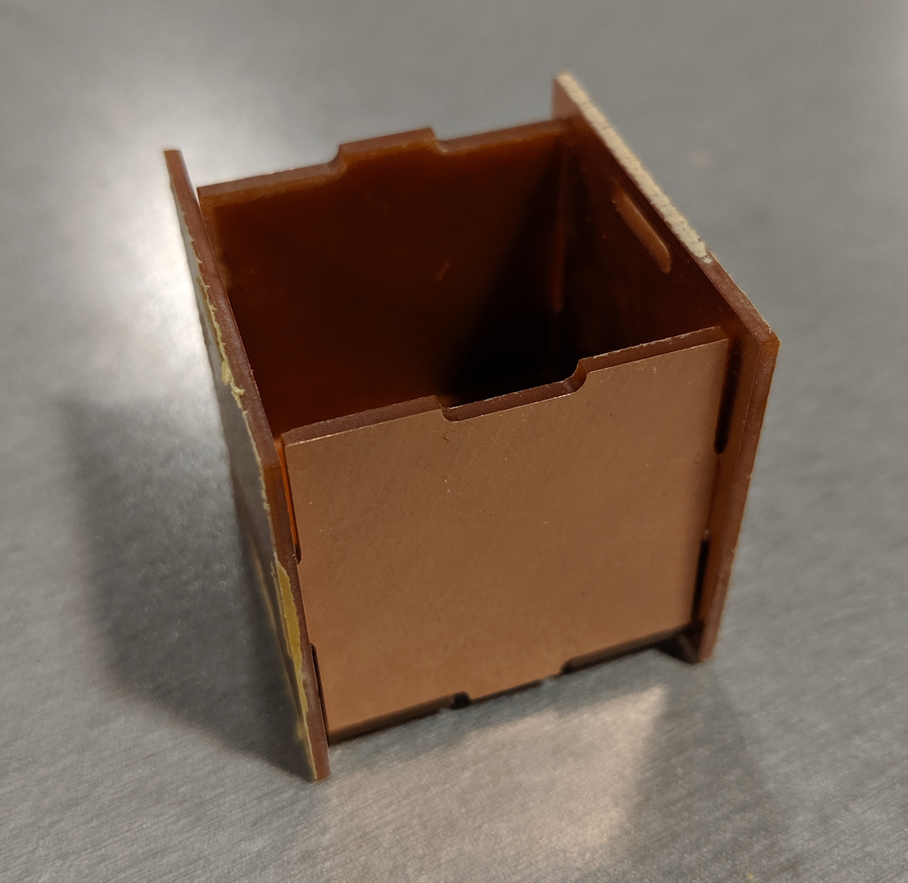

Cindy Feng's Assignment 5
This assignment was completed in the MILL on 05/13/2019.
Links to files used:
Modeling in Onshape
I started by measuring the sheet of FR1, which was 70 mm by 100 mm. I knew I wanted to keep the box small so that I could mill 2 sides per sheet of FR1. I also knew I wanted the top and base to be the same, and the sides to all be the same. I worked with Kim in the Mill. I quickly made the following sketch in Onshape. The dimensions are in mm. The slots are 1.29 mm because that is the thickness of the particular sheet of FR1 that we measured with calipers.
I then extruded this sketch by the thickness of the FR1 which was 1.29 mm. (I thought that all sheets of FR1 were the same thickness, so I modeled to this thickness, which ended up not being the case!)
I made a new assembly with 4 parts and used the fastening mate and the manipulation tools to align 4 of the sides together.
I then went back to the part studio and made a top plane to draw a top for the box. I projected the slots from the side piece, and then I arrayed this rectangle around the centerpoint of the top to create slots. This ultimately proved to be problematic when I tried to mill it because of the varying thicknesses of the FR1, but more details on that later.

Milling
I exported the faces of the sides and the top as dxfs. I then used KiCad and followed Josh's Powerpoint instructions to plot a gbr files with 2 sides, and another gbr file with 2 tops.
I then opened the two gbr files in BantamTools for milling. Here are the machine settings, which matched the instructions that were given by Josh.
I then proceeded to mill the pieces! Because my pieces were small, milling two at a time took less than 10 minutes! The sides came out beautifully.
The top, however, did not come out great since I did not measure the thickness of the sheet of FR1, and did not change the machine settings accordingly. Since the FR1 was thicker than the material thickness in the machine, the slots did not mill all the way through.
So I adjusted by oversizing the slots of the top and base so they would fit the max thickness of FR1, which I found to be about 1.6 mm. However, classmates told me that I should oversize the slots, so I went ahead and sketched them out to be 2 mm by 10 mm rectangular cutouts, which fillets that were 1 mm radius.
The Final Product
I verified that the pieces fit together by finalizing the assembly in Onshape.

I then went to the Mill and printed the parts below!
However, the pieces STILL didn't fit together as expected! The top, base, and 2 sides fit together really well with the edges meeting on all sides with no gaps, but the 3rd and 4th sides were really hard to add on, because I did not account for assembly when I was designing the parts! I also think that the slots were misaligned and should have been offset so they weren't centered on each edge. I had to think about why the assembly wasn't working for a while, but by then the MILL was closing and I didn't have time to mill another top and base!
Side #3 also fit! But it was a struggle to force the piece on.

Ultimately I could not get the 4th and final side assembled to complete the box, because the box was too constrained and I ran out of time to mill more tops and bases. Do 5 sides count as a box?
I think my thorough documentation shows that I know how to run the CNC tabletop mills at the MILL!
Acknowledgements: Leo, Kim, Josh, and everyone else who was at the Mill on Monday night!